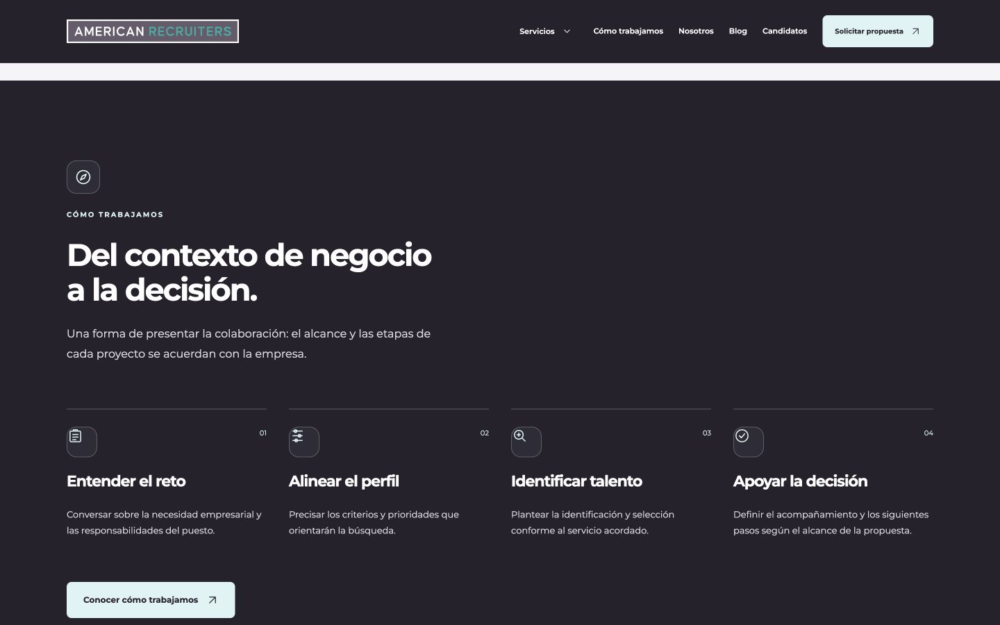
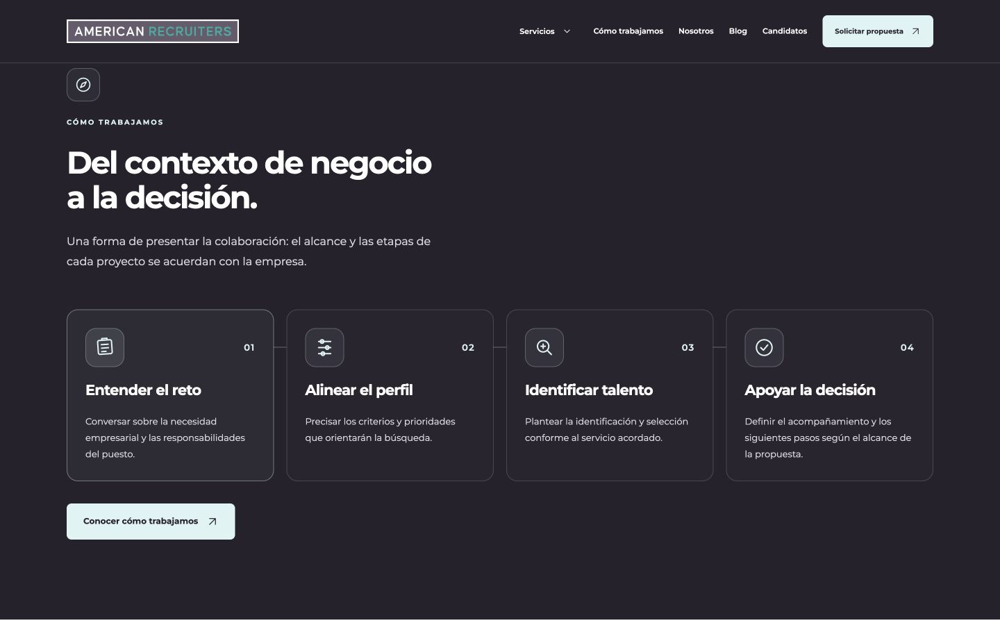
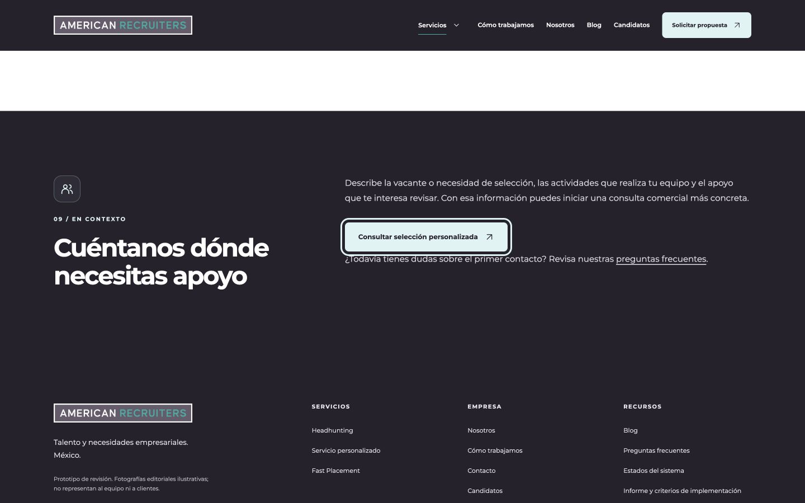
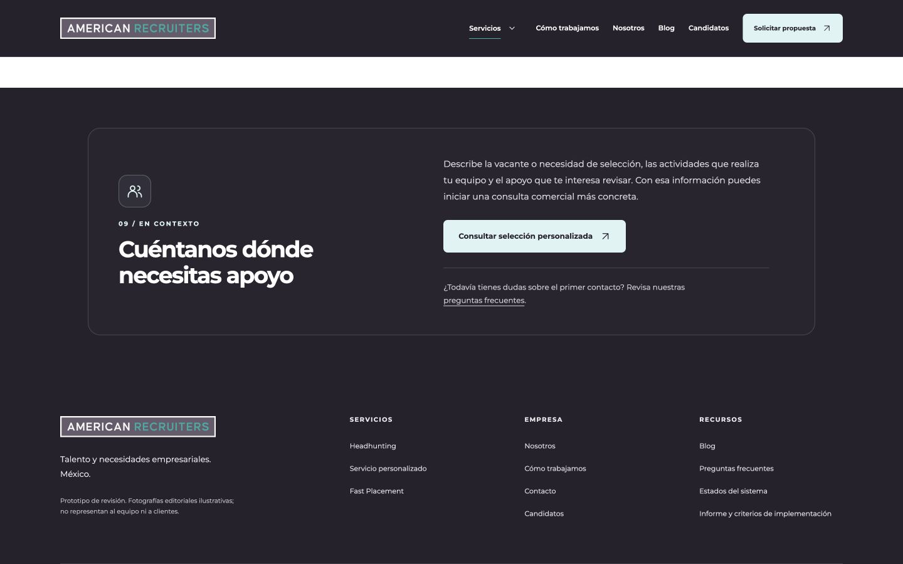

1. Cuatro pasos: del componente disperso al proceso conectado
Causa: una regla genérica de los span dentro de los pasos imponía display:block al contenedor del icono. El dibujo quedaba pegado a una esquina. Las líneas, el número y el título tampoco compartían una composición clara.
Corrección: tarjetas discretas con icono centrado de 30 px dentro de una caja de 56 px, número integrado, conexiones entre tarjetas y márgenes uniformes. Cuatro columnas en escritorio amplio, dos en tablet/escritorio intermedio y una en móvil. Los textos y los cuatro pasos permanecen intactos.




2. CTA: lectura, acción y ayuda con jerarquías distintas
El cierre de Servicio personalizado ahora utiliza una tarjeta editorial con título más contenido y una columna de lectura de aproximadamente 49 caracteres de ancho. La acción queda a 24 px del párrafo y la ayuda secundaria tiene separación y un divisor propios. En móvil se apila sin superposición; el botón conserva su destino a Contacto.
La navegación por teclado confirmó que el botón abre contacto.html. Allí permanece el aviso de canal deshabilitado y los seis campos deshabilitados. El prototipo no recibe ni envía solicitudes.




3. Componentes equivalentes
| Vista | Revisión / ajuste | Resultado |
|---|---|---|
| Home | Cuatro pasos conectados, iconos centrados, números integrados y alturas iguales por fila. | Corregido |
| Metodología | Misma familia de iconos a 30 px en escritorio / 28 px en móvil. Tarjetas conectadas. Eliminado el contador decorativo duplicado; se conserva el número del encabezado original. | Corregido |
| Servicios | Botones de las tres tarjetas alineados al pie; las tres tarjetas miden 300 px a 1440. Cierre editorial compacto. | Corregido |
| Headhunting, Servicio personalizado, Nosotros | Mismo cierre editorial, título moderado, icono alineado y CTA separado del texto. | Corregido |
| Contacto | Tarjeta de derivación a Candidatos equilibrada. El formulario y sus avisos quedan fuera de la intervención. Corregida sólo la navegación de “Ver guía” dentro del prototipo. | Corregido |
| Fast Placement, FAQ, Candidatos | Revisados; sin problema equivalente que justifique una nueva composición. Identidad, avisos y comportamiento conservados. | Sin cambios de composición |
| Blog y 17 artículos | Cards, sidebar, TOC y CTA existentes revisados. Se conservan composición, enlaces y contenido. La hoja compartida tiene versión de caché nueva. | Sin cambios editoriales ni de estructura |
4. QA final
160 comprobaciones nuevas: 32 documentos a 1440, 1024, 768, 390 y 360 px. Ancho efectivo del documento igual al viewport en todos los casos; un H1, sin IDs duplicados, sin texto recortado en los componentes intervenidos y sin campos habilitados. Las conexiones entre tarjetas son decorativas y no amplían el documento.
| Anchura | Proceso | CTA | Resultado |
|---|---|---|---|
| 1440 | 4 columnas; tarjetas de 247 px, iconos centrados. | Dos columnas, párrafo y acción integrados. | PASS |
| 1024 | 2 columnas, altura uniforme por fila. | Dos columnas, sin desbordamiento. | PASS |
| 768 | 2 columnas y conexiones por fila. | Dos columnas legibles; botón dentro de la tarjeta. | PASS |
| 390 / 360 | 1 columna con conexión vertical. | Composición apilada y ayuda separada. | PASS |
- Hover real comprobado con puntero en pasos y CTA. No cambia la altura de las tarjetas; sólo color y transformación del icono/botón.
- Tab y Shift+Tab: foco visible de 3 px entre botón y preguntas frecuentes. Enter abre Contacto; menú móvil probado con Enter y Escape por niveles.
- Revelado de pasos de 620 ms, retardos de 0 / 65 / 130 / 195 ms, una sola ejecución. Sin nuevas librerías ni cambios de JavaScript en esta ronda.
- Reducción de movimiento simulada: animación
noney transición0s. La prueba nativa del sistema sigue pendiente para implementación; no se presenta esta simulación como equivalente. - Consola del recorrido sin errores ni advertencias capturados. No se ha medido CLS o Core Web Vitals instrumentado.


5. Integridad y siguiente fase
Los 32 documentos conservan el texto principal y los formularios son idénticos al baseline V2.1. No se cambió ningún destino comercial. Única corrección de navegación local: /contacto/#h-cuentanos-que-necesitas pasó a #h-cuentanos-que-necesitas para que “Ver guía” funcione dentro de la maqueta. No cambia la URL real de WordPress.
Rama: design/redesign-v2.1-20261025. Baseline recuperable anterior: 1f76d0029cd6baf3f8ffb59de15bae41546d31be. No hay merge a main.
Consultar la primera ronda V2.1 · Revisar el prototipo final